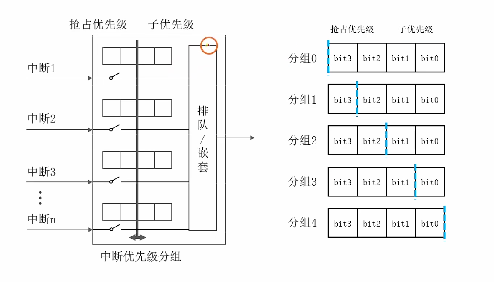

中断
stm32中断模块学习笔记，包括中断的概念、嵌套向量中断控制器(NVIC)、外部中断/事件控制器(EXTI)以及编程接口等内容。
中断的概念
中断的简单概念
在常规程序(无限循环部分) 执行过程中，产生某个突发事件时，CPU会暂停当前的程序执行，转而执行 中断响应函数（ISR) 来处理这个事件。处理完后，CPU会返回到之前暂停的位置继续执行。
中断的分类
-
外部中断：由外部事件触发，如按键、传感器输入等。
-
内部中断：由内部事件触发，如定时器溢出、串口接收完成等。
-
软件中断：由软件指令触发，用于实现系统调用等功能。
嵌套向量中断控制器(NVIC)

中断结构图
- 如图，片上外设会产生各种各样的中断，这些中断由NVIC模块进行管理，NVIC模块根据中断优先级决定哪个中断先被处理，产生中断向量表，随后CPU根据中断向量表进入对应的ISR函数进行处理。
中断优先级的概念
突发事件有轻重缓急之分，应该优先处理更紧急的事件。中断优先级就是用数字来区分不同中断的紧急程度，优先级高的中断会抢占优先级低的中断。
NVIC的优先级分组
NVIC的概念

NVIC模块图
-
NVIC（Nested Vectored Interrupt Controller）（嵌套向量中断控制器）是STM32中负责管理中断的控制器，位于CPU内部。它使用一个优先级分组的概念来表示中断优先级。优先级分组将优先级分为两部分：抢占优先级和子优先级。
-
如图，四个小方格，每个小方格代表一个比特位，优先级分组决定着抢占优先级和子优先级的比特位分配。优先级分组有0、1、2、3、4五种，组号表示子优先级所占的比特位数，剩下的则是抢占优先级的比特位数。
NVIC的作用原理
当中断引脚收到有效信号（或外设产生中断事件）时，NVIC 硬件会：
-
判断该中断是否被使能。
-
比较其优先级与当前运行优先级。
-
如果符合条件，NVIC会自动保存当前程序状态（如寄存器值、程序计数器等），并根据中断向量表跳转到对应的ISR函数地址执行。
这个过程完全由硬件完成，不需要在主循环中写任何判断语句。
NVIC的配置
相关接口说明已收录于文末的 编程接口，其中包含 NVIC_PriorityGroupConfig 和 NVIC_Init 的说明。
抢占优先级与中断嵌套
-
中断嵌套：更高优先级的中断可以打断正在处理的较低优先级的中断，这就是中断嵌套。
-
抢占优先级：决定了一个中断是否可以打断另一个中断。优先级数值越小，优先级越高。
子优先级与中断排队
-
中断排队：当多个中断同时发生且抢占优先级相同时，子优先级决定了它们的处理顺序。子优先级相同的中断不会互相打断，而是按照它们在中断向量表中的顺序依次处理（先来后到）。
-
子优先级：在抢占优先级相同的情况下，子优先级数值越小，优先级越高。
外部中断/事件控制器(EXTI)
EXTI的工作原理
在STM32中，外部中断（External Interrupt，简称EXTI）是指由外部事件触发的中断信号。它允许微控制器在检测到特定的外部信号变化时，暂停当前的程序执行，转而执行相应的中断服务程序（ISR）来处理该事件。处理完后，CPU会返回到之前暂停的位置继续执行。
EXTI模块

如图，EXTI外设模块位于APB2总线上。

-
如图，引脚输入单片机的电平信号的变化，主要有两种类型：上升沿（电平从低到高）、下降沿（电平从高到低）。
-
EXTI模块会根据配置的触发条件，检测这些信号变化，并在满足条件时向NVIC发送中断请求，从而触发相应的中断服务程序。
线的概念

- 如图所示，左边是外部引脚的信号输入，中间是EXTI线本身，捕捉信号的变化，右边是EXTI线产生的中断。

-
EXTI一共有20条线，编号为0-9，其中对应GPIO引脚的线只有16条：
-
线0-15：对应GPIOA-GPIOD的引脚，分别是PA0-PA15、PB0-PB15、PC0-PC15、PD0-PD15。具体分配通过复用器来选择，一次性只能选择一类引脚作为中断源。
-
线16：对应 实时时钟（RTC） 的闹钟中断。
-
线17：对应 看门狗(IWDG) 的中断。
-
线18：对应 看门狗（WWDG） 的中断。
-
线19：对应 电源管理（PVD） 的中断。
-
-
如图所示,EXTI0-EXTI4线对应的中断向量表中的中断号分别为EXTI0_IRQn-EXTI4_IRQn，EXTI5~EXTI9线对应的中断号为EXTI9_5_IRQn，EXTI10-XTI15线对应的中断号为EXTI15_10_IRQn。
线的内部结构

-
如图，最左边是复用器，用于选择哪一类端口作为中断源。
-
复用器右边是边沿检测电路，用于检测输入信号的变化类型（上升沿、下降沿）。
-
将检测出的上升/下降沿信号经过或门，生成一个双边缘信号。将三个信号输入右边的复用器，根据配置选择哪一个信号作为中断触发源。
-
经过复用器后，与软件触发信号（SWIER）进行或运算，最终生成一个中断请求信号（EXTI Line Interrupt Request）。
-
除了产生中断之外，EXTI模块还可以产生事件，用于触发其他外设的操作。事件触发与中断触发类似，但不会打断当前程序的执行，而是作为一种通知机制，让其他外设知道某个条件已经满足，从而进行相应的处理。
EXTI的配置
相关接口说明已收录于文末的 EXTI编程接口。
使用EXTI必须确保AFIO时钟已经使能，否则无法配置复用器选择IO引脚。
编程接口
NVIC相关
中断优先级分组
void NVIC_PriorityGroupConfig(uint32_t NVIC_PriorityGroup)
-
功能：配置 NVIC 的优先级分组。
-
参数：
NVIC_PriorityGroup指定优先级分组，取值范围为NVIC_PriorityGroup_0~NVIC_PriorityGroup_4。 -
说明：分组必须在初始化 NVIC（即
NVIC_Init）之前完成。
中断通道初始化相关
void NVIC_Init(NVIC_InitTypeDef* NVIC_InitStruct)
-
功能：初始化 NVIC 中断，设置抢占优先级和子优先级。
-
参数：
NVIC_InitStruct为一个结构体，成员包括：-
NVIC_IRQChannel：指定要配置的中断通道，具体名称可查阅stm32f10x.h头文件中的IRQn_Type枚举类型。 -
NVIC_IRQChannelPreemptionPriority：抢占优先级，取值范围为0到 ，其中 为分配给抢占优先级的比特位数，数值越小优先级越高。 -
NVIC_IRQChannelSubPriority：子优先级，取值范围为0到 ，其中 为分配给子优先级的比特位数，数值越小优先级越高。 -
NVIC_IRQChannelCmd：使能或禁用中断，取值为ENABLE或DISABLE。
-
EXTI相关
配置复用器选择IO引脚
void GPIO_EXTILineConfig(uint8_t GPIO_PortSource, uint8_t GPIO_PinSource)
-
功能：配置 EXTI 复用器，选择哪一类 GPIO 引脚作为中断源。
-
参数：
-
GPIO_PortSource：指定 GPIO 端口来源，取值范围为GPIO_PortSourceGPIOA~GPIO_PortSourceGPIOD。 -
GPIO_PinSource：指定 GPIO 引脚来源，取值范围为GPIO_PinSource0~GPIO_PinSource15。
-
初始化EXTI的一条线
void EXTI_Init(EXTI_InitTypeDef* EXTI_InitStruct)
-
功能：初始化 EXTI 的一条线，设置触发方式和中断使能。
-
参数：
EXTI_InitStruct为一个结构体，成员包括：-
EXTI_Line：指定要配置的 EXTI 线，取值范围为EXTI_Line0~EXTI_Line19。 -
EXTI_Mode：指定 EXTI 的工作模式，取值为EXTI_Mode_Interrupt（中断模式）或EXTI_Mode_Event（事件模式）。 -
EXTI_Trigger：指定触发方式，取值为EXTI_Trigger_Rising（上升沿触发）、EXTI_Trigger_Falling（下降沿触发）或EXTI_Trigger_Rising_Falling（双边沿触发）。 -
EXTI_LineCmd：使能或禁用 EXTI 线，取值为ENABLE或DISABLE。
-
检查EXTI标志位或中断
FlagStatus EXTI_GetFlagStatus(uint32_t EXTI_Line)
-
功能：检查指定的EXTI线是否产生标志位。
-
参数：
EXTI_Line：指定要检查的EXTI线，取值范围为EXTI_Line0~EXTI_Line19。 -
返回值：
SET表示标志位已设置，RESET表示标志位未设置。
ITStatus EXTI_GetITStatus(uint32_t EXTI_Line)
-
功能：检查指定的EXTI线是否产生中断请求。
-
参数：
EXTI_Line：指定要检查的EXTI线，取值范围为EXTI_Line0~EXTI_Line19。 -
返回值：
SET表示中断请求已产生，RESET表示中断请求未产生。
清除EXTI标志位或中断
void EXTI_ClearFlag(uint32_t EXTI_Line)
-
功能：清除指定的EXTI线的标志位。
-
参数：
EXTI_Line：指定要清除的EXTI线，取值范围为EXTI_Line0~EXTI_Line19。
void EXTI_ClearITPendingBit(uint32_t EXTI_Line)
-
功能：清除指定的EXTI线的中断挂起位。
-
参数：
EXTI_Line：指定要清除的EXTI线，取值范围为EXTI_Line0~EXTI_Line19。